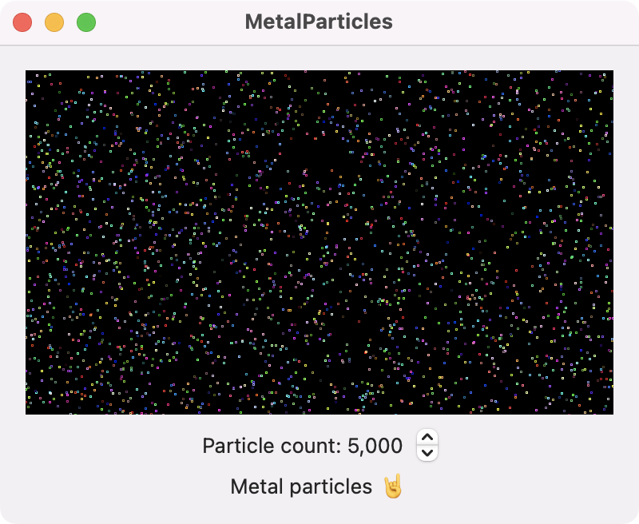

This example uses Metal to draw particles (pixels) in a view. The particles move throughout the view based on their position and velocity. This example is inspired by the Working with Particles in Metal part 3 article by Marius Horga. However, this example is implemented with SwiftUI for macOS whereas Marius' example runs in an Xcode playground.

The main view and window is setup in the SwiftUI ContentView.
import SwiftUI
struct ContentView: View {
var body: some View {
VStack {
MetalView()
Text("Metal particles 🤘")
}
.padding()
.frame(minWidth: 400, minHeight: 300)
}
}
To implement Metal with SwiftUI, you can wrap the MTKView as an NSViewRepresentable which is depicted by the MetalView shown below. The Renderer handles drawing to the view. This approach is adopted from the Ray Wenderlich book Metal by Tutorials. A stepper is used to control the number of particles drawn in the view.
import SwiftUI
import MetalKit
struct MetalView: View {
@State private var metalView = MTKView()
@State private var renderer: Renderer?
@State private var count: Int = 5000
var body: some View {
VStack {
MetalViewRepresentable(metalView: $metalView)
.onAppear {
renderer = Renderer(metalView: metalView)
}
Stepper("Particle count: \(count)", value: $count, in: 5_000...55_000, step: 10_000)
.onChange(of: count) { newValue in
renderer?.particleCount = newValue
renderer?.initializeBuffers()
}
}
}
}
struct MetalViewRepresentable: NSViewRepresentable {
@Binding var metalView: MTKView
func makeNSView(context: Context) -> some NSView {
metalView
}
func updateNSView(_ uiView: NSViewType, context: Context) { }
}
The Renderer class initializes the Metal device, command queue, pipeline states, and shader functions. This class acts as the MTKViewDelegate to draw the particles in the view. The Particle struct is also defined in this file.
import MetalKit
struct Particle {
var color: SIMD4<Float>
var position: SIMD2<Float>
var velocity: SIMD2<Float>
}
class Renderer: NSObject {
static var device: MTLDevice!
static var commandQueue: MTLCommandQueue!
var clearState: MTLComputePipelineState!
var drawState: MTLComputePipelineState!
var particleBuffer: MTLBuffer!
var particleCount: Int = 5000
init(metalView: MTKView) {
super.init()
guard let device = MTLCreateSystemDefaultDevice(),
let commandQueue = device.makeCommandQueue()
else {
fatalError("GPU not available")
}
Renderer.device = device
Renderer.commandQueue = commandQueue
let library = device.makeDefaultLibrary()
let clearFunc = library?.makeFunction(name: "clearScreen")
let drawFunc = library?.makeFunction(name: "drawParticles")
do {
clearState = try device.makeComputePipelineState(function: clearFunc!)
drawState = try device.makeComputePipelineState(function: drawFunc!)
} catch let error as NSError {
print(error)
}
metalView.device = device
metalView.framebufferOnly = false
metalView.delegate = self
initializeBuffers()
}
func initializeBuffers() {
let side = 800
var particles: [Particle] = []
for _ in 0..<particleCount {
let red = Float.random(in: 0...1)
let green = Float.random(in: 0...1)
let blue = Float.random(in: 0...1)
let x = Float(arc4random() % UInt32(side))
let y = Float(arc4random() % UInt32(side))
let vx = (Float(arc4random() % 10) - 5) / 2
let vy = (Float(arc4random() % 10) - 5) / 2
let particle = Particle(
color: SIMD4<Float>(red, green, blue, 1),
position: SIMD2<Float>(x, y),
velocity: SIMD2<Float>(vx, vy))
particles.append(particle)
}
let size = MemoryLayout<Particle>.stride * particleCount
particleBuffer = Renderer.device.makeBuffer(bytes: particles, length: size)
}
}
extension Renderer: MTKViewDelegate {
func mtkView(_ view: MTKView, drawableSizeWillChange size: CGSize) { }
func draw(in view: MTKView) {
guard let drawable = view.currentDrawable else { return }
let commandbuffer = Renderer.commandQueue.makeCommandBuffer()
let commandEncoder = commandbuffer?.makeComputeCommandEncoder()
commandEncoder?.setComputePipelineState(clearState)
commandEncoder?.setTexture(drawable.texture, index: 0)
let w = clearState.threadExecutionWidth
let h = clearState.maxTotalThreadsPerThreadgroup / w
var threadsPerThreadGroup = MTLSize(width: w, height: h, depth: 1)
var threadsPerGrid = MTLSize(width: drawable.texture.width, height: drawable.texture.height, depth: 1)
commandEncoder?.dispatchThreads(threadsPerGrid, threadsPerThreadgroup: threadsPerThreadGroup)
commandEncoder?.setComputePipelineState(drawState)
commandEncoder?.setBuffer(particleBuffer, offset: 0, index: 0)
threadsPerGrid = MTLSize(width: particleCount, height: 1, depth: 1)
threadsPerThreadGroup = MTLSize(width: w, height: 1, depth: 1)
commandEncoder?.dispatchThreads(threadsPerGrid, threadsPerThreadgroup: threadsPerThreadGroup)
commandEncoder?.endEncoding()
commandbuffer?.present(drawable)
commandbuffer?.commit()
}
}
The shader functions are defined in a Metal file along with a Particle struct. The clearScreen kernel function creates a black background for the Metal view. Behavior and drawing of the particles is handled by the drawParticles kernel function.
#include <metal_stdlib>
using namespace metal;
struct Particle {
float4 color;
float2 position;
float2 velocity;
};
kernel void clearScreen (
texture2d<half, access::write> output [[texture(0)]],
uint2 id [[thread_position_in_grid]])
{
output.write(half4(0), id);
}
kernel void drawParticles (
texture2d<half, access::write> output [[texture(0)]],
device Particle *particles [[buffer(0)]],
uint id [[thread_position_in_grid]])
{
float width = output.get_width();
float height = output.get_height();
Particle particle = particles[id];
float2 position = particle.position;
float2 velocity = particle.velocity;
if (position.x < 0 || position.x > width) {
velocity.x *= -1;
}
if (position.y < 0 || position.y > height) {
velocity.y *= -1;
}
position += velocity;
particle.position = position;
particle.velocity = velocity;
particles[id] = particle;
half4 color = half4(particle.color.r, particle.color.g, particle.color.b, 1);
uint2 pos = uint2(position.x, position.y);
output.write(color, pos + uint2(-1, 1));
output.write(color, pos + uint2( 0, 1));
output.write(color, pos + uint2( 1, 1));
output.write(color, pos + uint2(-1, 0));
output.write(color, pos + uint2( 1, 0));
output.write(color, pos + uint2(-1, -1));
output.write(color, pos + uint2( 0, -1));
output.write(color, pos + uint2( 1, -1));
}
🍎 🖥 Swift Programming for macOS
by Gavin Wiggins © 2022